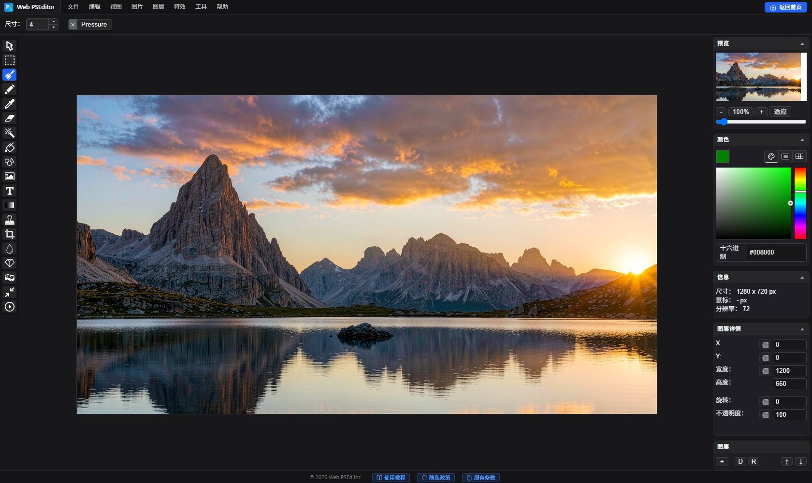

社交媒体图片尺寸指南
挑好了一张完美的头像，上传完被裁成半张脸。精心做的封面，信息流里只露出一条细缝。原因很简单：平台从来不按你文件的原始比例展示，它按自己的容器展示；只要比例差一点，它就会替你裁。解法不是祈祷它裁得好看，而是提前裁好，让平台没有可裁的余地。
平台为什么要裁你的图
每个社交平台都把一个固定容器套在你的图片上。它要么加黑边（很少见）、要么拉伸（更少，只在做得差的站上）、要么裁切填满。裁切是默认，因为它在信息流里更整齐——也正好是你构图死掉的地方。
更麻烦的是预览。附上图片时，大多数应用会显示一个大致接近最终效果的缩略图，但真正的裁切由一条你看不见的规则决定：有时居中、有时贴顶、有时优先保留细节最多的区域。两张尺寸完全相同的照片，可能被裁得完全不一样。这就是为什么照着预览猜总是失手，而唯一可靠的办法是：交给平台一个已经是目标比例的文件。没有可裁的，就不会裁错。
尺寸速查
下面这些是大多数人真的会用到的位置。像素值按「安全导出尺寸」理解，不是平台强制的规格；必须对上的是比例，像素只要够大、不至于被平台放大就行。
| 位置 | 比例 | 安全导出尺寸 |
|---|---|---|
| 头像 / 方形信息流 | 1:1 | 1080 × 1080 |
| 竖版信息流 | 4:5 | 1080 × 1350 |
| 链接预览卡 | 1.91:1 | 1200 × 630 |
| 主页横幅 / 封面 | 3:1 | 1500 × 500 |
| 故事 / 短视频封面 | 9:16 | 1080 × 1920 |
| 视频封面 | 16:9 | 1280 × 720 |
| 公众号首图 | 2.35:1 | 900 × 383 |
比例是会变的。平台改一次信息流或横幅版式，按旧比例导出的文件进去就被再裁一遍。按当前比例导出、同时留着可编辑原图，下次重裁是几秒钟的事，不是重拍。
安全区比比例更容易被忽略
对上比例只是一半。故事和短视频封面上，界面是压在你的画面上的：底部有说明框和进度条，部分应用还会再加一行贴纸。一张 1080×1920 的故事，这些界面大约占掉底部 250 像素，手机端的顶部还可能盖住120 像素。文字放在那儿，在编辑器里完美，在观众屏幕上直接消失。
头像上的圆形裁切同理：平台把方图裁成圆，四角等于废了。名字、Logo 的基座、任何关键元素，都要留在中心区域。横幅则会被手机端的头像压住左边缘，而且屏幕越窄裁得越紧——把关键信息放在中间 60% 的范围内，各种视口都能活。
把外面那圈当「出血」处理：填背景、纹理、虚化的照片，永远不要放信息。

在编辑器里：两刀定尺寸
打开照片，选裁剪工具，拖出保留区域。先说清一件事：这个裁剪工具没有比例预设，唯一的辅助键是按住 Ctrl（Mac 为 Cmd），而它锁定的是原图当前的比例——你想改的恰恰是比例，所以帮不上忙。所以先用眼睛裁成大致形状，让主体居中或落在三分线上，下一步再定精确尺寸。
点 【图片】→【画布尺寸】，宽高都填目标值（头像就 1080 和 1080），分辨率保持「自定义」，按比例关掉。画布会变成这个尺寸，画面本身不缩放：超出部分被裁掉，不足的地方留空。所以第一步要裁得略大一点，再用它收边——这比反过来（先定尺寸再补内容）好处理得多。
如果只是整体缩小、构图不动，用 【图片】→【调整大小】：只填一个边，另一边按原比例自动算，画面不会变形。
【文件】→【导出】，JPG 质量 85 以上。一个位置一个文件，命名按用途来：头像-1x1、封面-3x1。下次平台改版，你不用再反推哪个文件是哪个。
分辨率、DPI 和体积，三个数只有一个重要
像素尺寸决定文件里有多少细节，它才决定画面清不清晰，也是在「调整大小」里要设的那个数。DPI 只告诉打印机每英寸排多少点，屏幕上毫无作用——把一个 600 像素的文件导出成「300 DPI」，它还是 600 像素，只是换了个标签。体积是上传限制关心的东西：1080 像素的照片按质量 85 导出，通常落在 150KB 到 400KB 之间，低于所有常见上限。
真正丢清晰度的地方是二次压缩。每个平台都会重新编码你的上传，一张已经存成质量 60、又被平台按 80 压一遍的图，块状噪点会叠加。一次高质量导出，让平台压它那一次，然后别再去保存平台返回的结果。把预览截屏再上传，是最常见的自毁画质方式。
纯色底加文字这类扁平图形（封面横幅、Logo 头像）用 PNG，避开 JPG 在硬边上的糊化，而且颜色少、体积也不大。照片一律 JPG 更小。平台接受 WebP 的话，同等观感下通常只要三分之一的字节，但手上永远留一份 JPG 兜底——不是每个上传框都认。
- 放大一张小图。 400 像素的头像拉到 1080，平台还没碰它就已经软了。永远从手上最大的原图开始。
- 一个文件打天下。 1:1 方图硬塞进 9:16 的故事，宽度丢一半。本地处理是秒级的，一个位置一份文件。
- 忽略手机端裁切。 桌面预览会骗你——横幅和封面要到手机上看一遍再发。
- 把文字放在边缘。 故事和封面的外圈会被界面盖住，那是最不该放信息的区域。
- 相信上传框里的预览。 它只是近似。要相信的是你导出的那个比例。
常见问题 FAQ
头像应该上传多大？
至少 400×400 像素，有 1080×1080 就用它。多数平台把头像裁成圆形显示，所以脸或 Logo 要放在中心，四角留给背景。低于 200×200 会被平台放大，立刻变软。
封面图上传后为什么变糊？
两个原因，都能在上传前解决。要么原图比展示尺寸小、被放大了，要么保存时质量太低、又被平台压了一遍。按完整展示尺寸导出、质量 85 以上，并且别去重存下载回来的预览图。
发社交平台需要导出 300 DPI 吗？
不需要。DPI 只告诉打印机怎么排点，屏幕读的是像素尺寸。1080×1080 的文件不管标 72 还是 300 DPI，都还是 1080×1080。设像素，忽略 DPI 字段。
相关教程推荐
把一张照片做成 1080×1080 头像和 1500×500 横幅两个版本，对着上表核对比例。